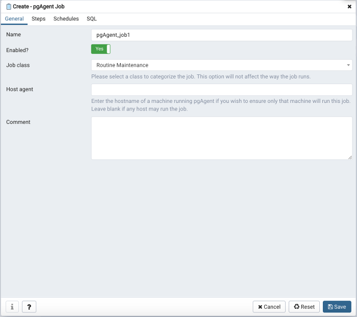
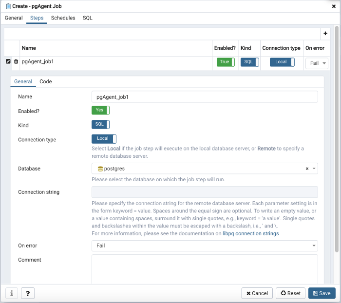
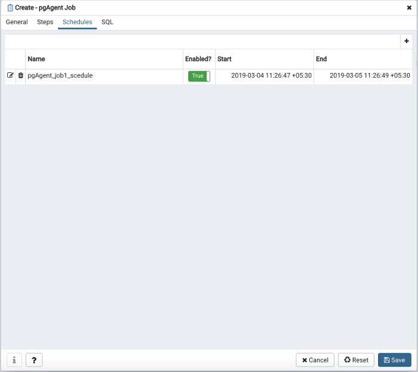
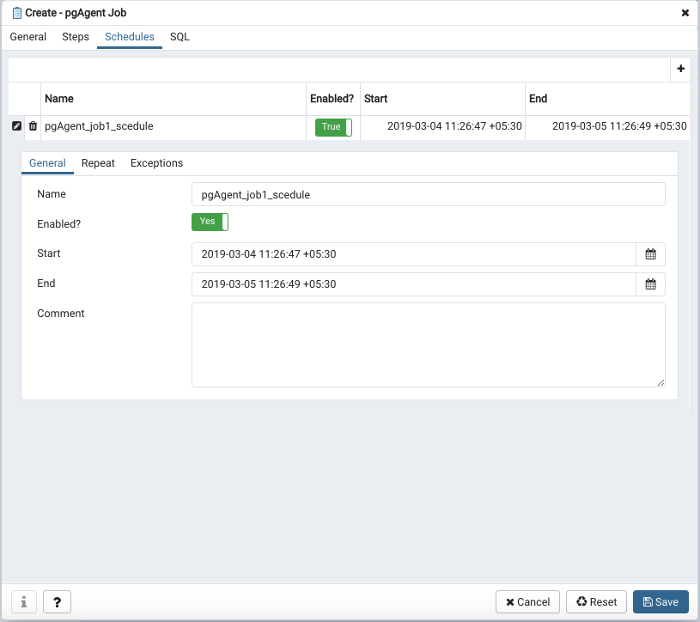
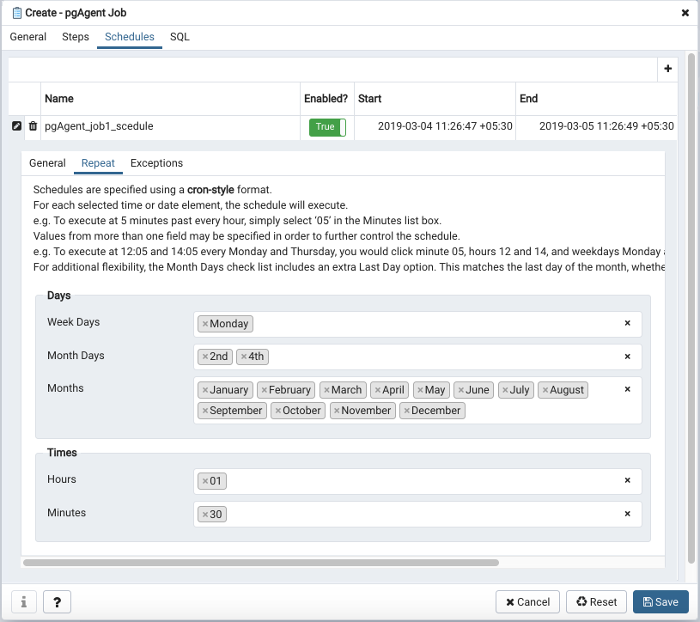
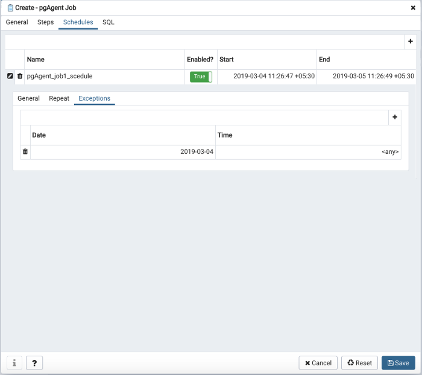
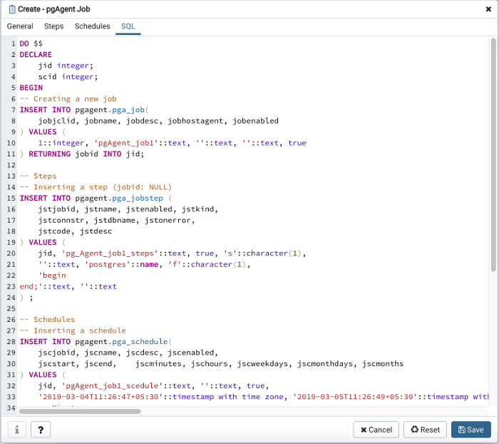
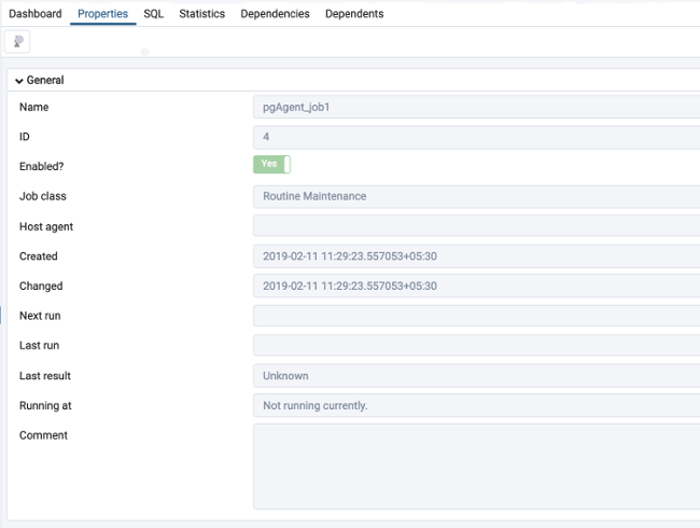

Creating a pgAgent Job¶
pgAgent is a scheduling agent that runs and manages jobs; each job consists of steps and schedules.
To create or manage a job, use the pgAdmin tree control to browse to the server on which the pgAgent database objects were created. The tree control will display a pgAgent Jobs node, under which currently defined jobs are displayed. To add a new job, right click on the pgAgent Jobs node, and select Create pgAgent Job… from the context menu.
When the pgAgent dialog opens, use the tabs on the pgAgent Job dialog to define the steps and schedule that make up a pgAgent job.
Use the fields on the General tab to provide general information about a job:
Provide a name for the job in the Name field.
Move the Enabled switch to the Yes position to enable a job, or No to disable a job.
Use the Job Class drop-down to select a class (for job categorization).
Use the Host Agent field to specify the name of a machine that is running pgAgent to indicate that only that machine may execute the job. Leave the field blank to specify that any machine may perform the job.
Note
It is not always obvious what value to specify for the Host Agent in order to target a job step to a specific machine. With pgAgent running on the required machines and connected to the scheduler database, you can use the following query to view the hostnames as reported by each agent:
SELECT jagstation FROM pgagent.pga_jobagent
Use the hostname exactly as reported by the query in the Host Agent field.
Use the Comment field to store notes about the job.
Use the Steps tab to define and manage the steps that the job will perform. Click the Add icon (+) to add a new step; then click the compose icon (located at the left side of the header) to open the step definition dialog:
Use fields on the step definition dialog to define the step:
Provide a name for the step in the Name field; please note that steps will be performed in alphanumeric order by name.
Use the Enabled switch to include the step when executing the job (True) or to disable the step (False).
Use the Kind switch to indicate if the job step invokes SQL code (SQL) or a batch script (Batch).
If you select SQL, use the Code tab to provide SQL code for the step.
If you select Batch, use the Code tab to provide the batch script that will be executed during the step.
Note
The fields Connection type, Database and Connection string are only applicable when SQL is selected because Batch cannot be run on remote servers.
Use the Connection type switch to indicate if the step is performed on a local server (Local) or on a remote host (Remote). If you specify a remote connection should be used for the step, the Connection string field will be enabled, and you must provide a libpq-style connection string.
Use the Database drop-down to select the database on which the job step will be performed.
Use the Connection string field to specify a libpq-style connection string to the remote server on which the step will be performed. For more information about writing a connection string, please see the PostgreSQL documentation.
Use the On error drop-down to specify the behavior of pgAgent if it encounters an error while executing the step. Select from:
Fail - Stop the job if you encounter an error while processing this step.
Success - Mark the step as completing successfully, and continue.
Ignore - Ignore the error, and continue.
Use the Comment field to provide a comment about the step.
Use the context-sensitive field on the step definition dialog’s Code tab to provide the SQL code or batch script that will be executed during the step:
If the step invokes SQL code, provide one or more SQL statements in the SQL query field.
If the step performs a batch script, provide the script in the Script field. If you are running on a Windows server, standard batch file syntax must be used. When running on a Linux server, any shell script may be used, provided that a suitable interpreter is specified on the first line (e.g. #!/bin/sh).
When you’ve provided all of the information required by the step, click the compose icon to close the step definition dialog. Click the add icon (+) to add each additional step, or select the Schedules tab to define the job schedule.
Click the Add icon (+) to add a schedule for the job; then click the compose icon (located at the left side of the header) to open the schedule definition dialog:
Use the fields on the schedule definition tab to specify the days and times at which the job will execute.
Provide a name for the schedule in the Name field.
Use the Enabled switch to indicate that pgAgent should use the schedule (Yes) or to disable the schedule (No).
Use the calendar selector in the Start field to specify the starting date and time for the schedule.
Use the calendar selector in the End field to specify the ending date and time for the schedule.
Use the Comment field to provide a comment about the schedule.
Select the Repeat tab to define the days on which the schedule will execute.
Use the fields on the Repeat tab to specify the details about the schedule in a cron-style format. The job will execute on each date or time element selected on the Repeat tab.
Click within a field to open a list of valid values for that field; click on a specific value to add that value to the list of selected values for the field. To clear the values from a field, click the X located at the right-side of the field.
Use the fields within the Days box to specify the days on which the job will execute:
Use the Week Days field to select the days on which the job will execute.
Use the Month Days field to select the numeric days on which the job will execute. Specify the Last Day to indicate that the job should be performed on the last day of the month, irregardless of the date.
Use the Months field to select the months in which the job will execute.
Use the fields within the Times box to specify the times at which the job will execute:
Use the Hours field to select the hour at which the job will execute.
Use the Minutes field to select the minute at which the job will execute.
Select the Exceptions tab to specify any days on which the schedule will not execute.
Use the fields on the Exceptions tab to specify days on which you wish the job to not execute; for example, you may wish for jobs to not execute on national holidays.
Click the Add icon (+) to add a row to the exception table, then:
Click within the Date column to open a calendar selector, and select a date on which the job will not execute. Specify <Any> in the Date column to indicate that the job should not execute on any day at the time selected.
Click within the Time column to open a time selector, and specify a time on which the job will not execute. Specify <Any> in the Time column to indicate that the job should not execute at any time on the day selected.
When you’ve finished defining the schedule, you can use the SQL tab to review the code that will create or modify your job.
Click the Save button to save the job definition, or Cancel to exit the job without saving. Use the Reset button to remove your unsaved entries from the dialog.
After saving a job, the job will be listed under the pgAgent Jobs node of the pgAdmin tree control of the server on which it was defined. The Properties tab in the main pgAdmin window will display a high-level overview of the selected job, and the Statistics tab will show the details of each run of the job.
To modify an existing job or to review detailed information about a job, right-click on a job name, and select Properties from the context menu.